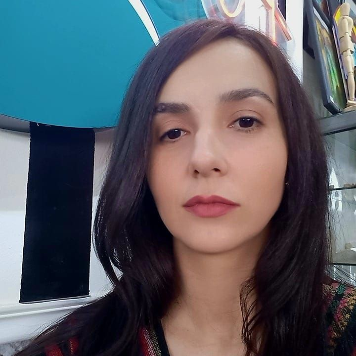
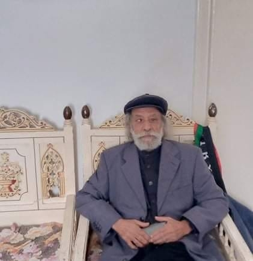
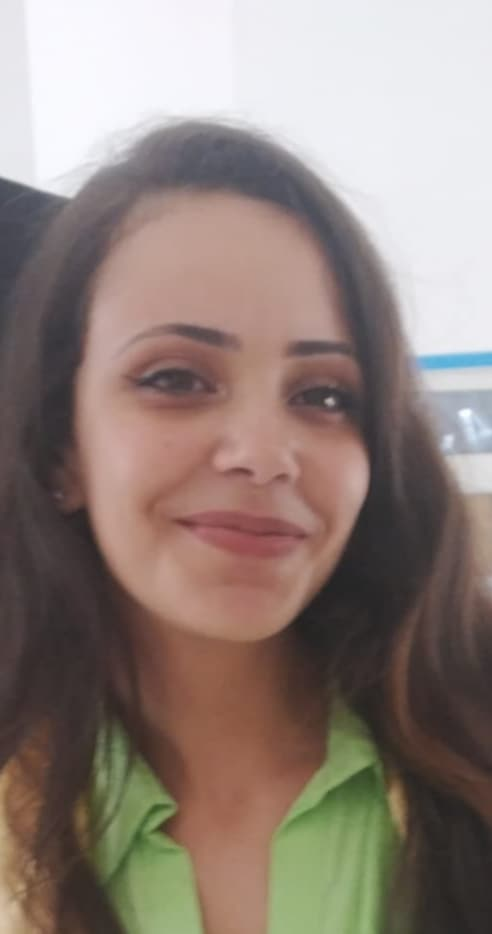

-Directeur artistique de l’espace
-Un des fondateurs du Centre culturel Le Masque
-Metteur en scène, écrivain et comédien de théâtre
- Abed Houssem

-Conseillère artistique de l’espace
-Une des fondatrices du Centre culturel Le Masque
-Comédienne et professeure de théâtre
- Ghares Rihab

-Agent de l’espace
-Acteur retraité du Théâtre National Tunisien
-activiste dans le domaine culturel
- Koudhai Mostapha

- Réceptionniste au Centre, à l’accueil
- Barkallah Maryem
- Comptable du Centre
- Chaabouni Mounira